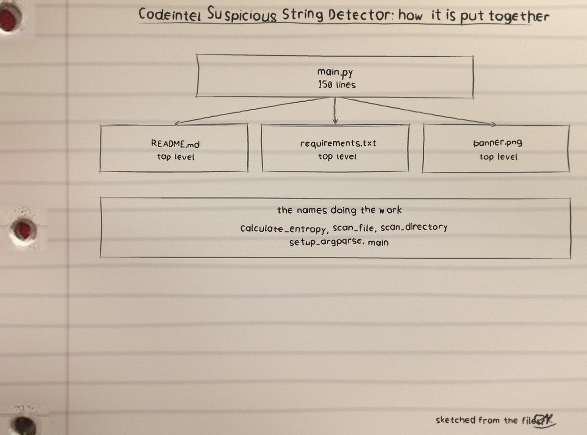
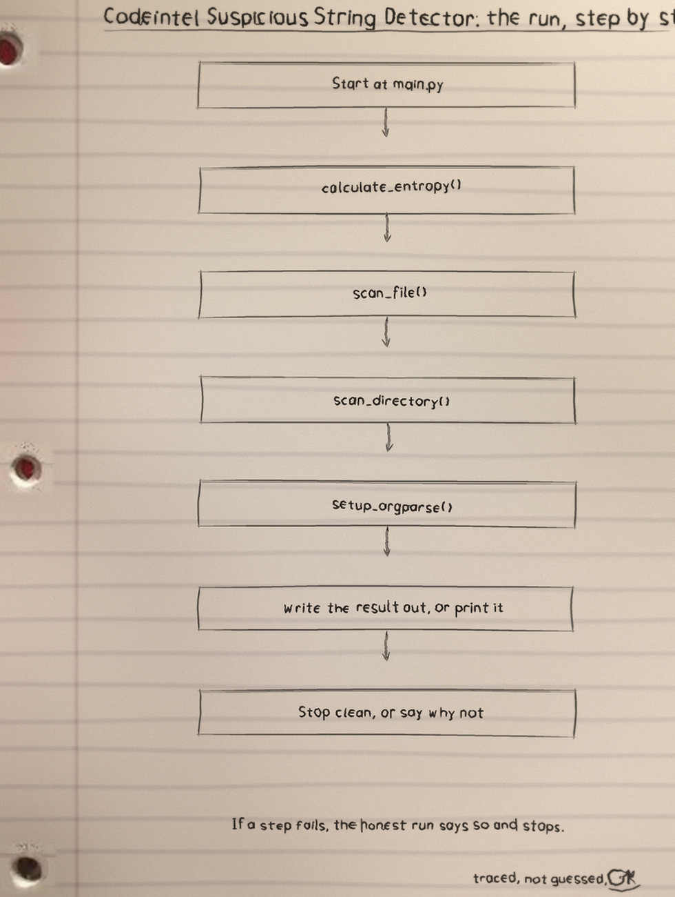
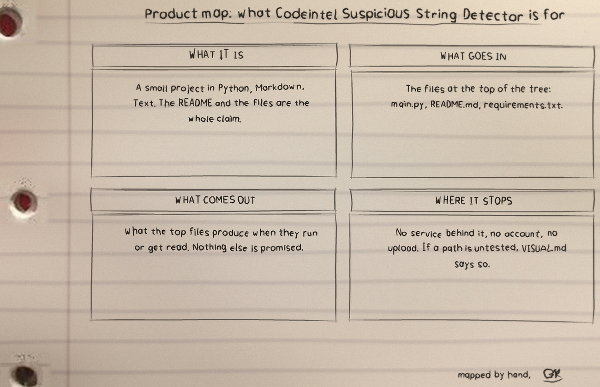

What the detector does
The tool reads files line by line as plain text and flags lines two ways, run as python3 main.py (-f FILE | -d DIRECTORY) [-e ENTROPY_THRESHOLD] [-l LOG_FILE], with exactly one of the file and directory options required. The first way is a fixed list of eight regular expressions. The second way measures the Shannon entropy of the whole stripped line. A directory scan walks recursively and reads every file whatever its ending.
Eight patterns on the line
In the order the code holds them: a semicolon before an rm or del command with -rf; eval(; exec(; subprocess.call(; os.system(; ../; /etc/passwd; and UNION SELECT.
Entropy is measured on the whole line
The entropy figure belongs to the whole stripped line, never to any one string inside it. A line is measured only when the stripped line is longer than ten characters, and it is flagged only when its entropy is strictly greater than the threshold, whose default is 4.5. A long ordinary line with varied text can cross the threshold with no random string anywhere in it.
A pattern in a comment is flagged as text
The search knows each line as text and nothing more, so a pattern inside a comment or a quoted example is flagged exactly as a pattern in live code would be.
Install
git clone https://github.com/ShadowGuard-AI/codeintel-suspicious-string-detector
main.py uses only the standard library, so no dependency step follows the clone.
Usage
python3 main.py (-f FILE | -d DIRECTORY) [-e ENTROPY_THRESHOLD] [-l LOG_FILE]
Exactly one of -f and -d is required. The log path is tried before scanning starts.
Parameters
-h: show help message and exit.-f,--file: path to the file to scan.-d,--directory: path to the directory to scan recursively.-e,--entropy_threshold: entropy threshold (default 4.5), applied strictly, so a line at the threshold itself is not flagged.-l,--log_file: path to the log file; if not provided, logs print to the console.
Exit codes
Findings never move the exit code. A run with findings printed still exits 0. Exit 1 is for read errors, a missing file, a directory that is not a directory, or a log path that cannot be opened, which is tried before scanning starts.
Diagrams



Licence
The repository LICENSE file carries the MIT License.